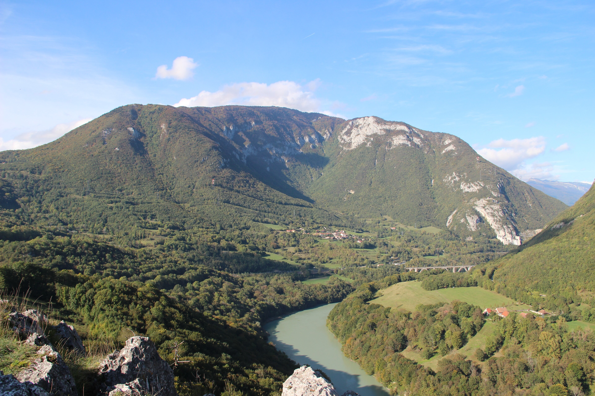

¿De donde viene el nombre Jurásico
Jurasíco es un termino que le da el naturalisata Alexandre Brongniart en su obra Tableau des terrains (1829) refiriendose a la cadena montañosa del Jura, situada en los Alpes

Inicio